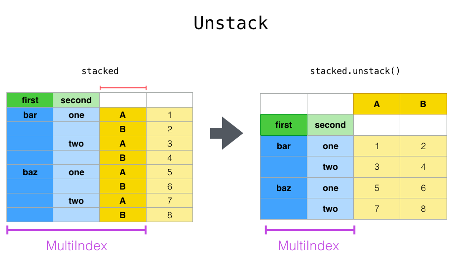

Optional: more on Pandas
Objectives
Learn about other data wrangling operations in pandas
Begin by defining a new dataframe:
import numpy as np
import pandas as pd
df = pd.DataFrame(
{
"foo": ["one", "one", "one", "two", "two", "two"] ,
"bar": ["A", "B", "C"] * 2,
"baz": np.linspace(1,6,6).astype(int),
"zoo": ["x","y","z","q","w","t"]
}
)
df
Suppose we would like to represent the table in such a way that
the columns are the unique variables from “bar” and the index from “foo”.
To reshape the data into this form, we use the DataFrame.pivot()
method (also implemented as a top level function pivot()):
pivoted = df.pivot(index="foo", columns="bar", values="baz")
pivoted

Note
pivot() will error with a ValueError: Index contains duplicate
entries, cannot reshape if the index/column pair is not unique. In this
case, consider using pivot_table() which is a generalization
of pivot that can handle duplicate values for one index/column pair.
Stacking and unstacking
Closely related to the pivot() method are the related
stack() and unstack() methods available on Series and DataFrame.
These methods are designed to work together with MultiIndex objects.
The stack() function “compresses” a level in the DataFrame columns to produce either:
A Series, in the case of a simple column Index.
A DataFrame, in the case of a MultiIndex in the columns.
If the columns have a MultiIndex, you can choose which level to stack. The stacked level becomes the new lowest level in a MultiIndex on the columns:
tuples = list(zip(*[
["bar", "bar", "baz", "baz", "foo", "foo", "qux", "qux"],
["one", "two", "one", "two", "one", "two", "one", "two"],
]))
columns = pd.MultiIndex.from_tuples([
("bar", "one"),
("bar", "two"),
("baz", "one"),
("baz", "two"),
("foo", "one"),
("foo", "two"),
("qux", "one"),
("qux", "two"),
],
names=["first", "second"])
index = pd.MultiIndex.from_tuples(tuples, names=["first", "second"])
Note: there are other ways to generate MultiIndex, e.g.
index = pd.MultiIndex.from_product(
[("bar", "baz", "foo", "qux"), ("one", "two")], names=["first", "second"]
)
df = pd.DataFrame(np.linspace(1,16,16).astype(int).reshape(8,2), index=index, columns=["A", "B"])
df
df2 = df[:4]
df2
stacked=df2.stack()

The unstack() method performs the inverse operation of stack(), and by default unstacks the last level. If the indexes have names, you can use the level names instead of specifying the level numbers.
stacked.unstack()
stacked.unstack(1) or stacked.unstack(“second”)


Aggregation
Here we will go through the following example
import urllib.request
import pandas as pd
header_url = 'ftp://ftp.ncdc.noaa.gov/pub/data/uscrn/products/daily01/HEADERS.txt'
with urllib.request.urlopen(header_url) as response:
data = response.read().decode('utf-8')
lines = data.split('\n')
headers = lines[1].split(' ')
ftp_base = 'ftp://ftp.ncdc.noaa.gov/pub/data/uscrn/products/daily01/'
dframes = []
for year in range(2016, 2019):
data_url = f'{year}/CRND0103-{year}-NY_Millbrook_3_W.txt'
df = pd.read_csv(ftp_base + data_url, parse_dates=[1],
names=headers,header=None, sep='\s+',
na_values=[-9999.0, -99.0])
dframes.append(df)
df = pd.concat(dframes)
df = df.set_index('LST_DATE')
df.head()
df['T_DAILY_MEAN'] # or df.T_DAILY_MEAN
df['T_DAILY_MEAN'].aggregate([np.max,np.min,np.mean])
df.index # df.index is a pandas DateTimeIndex object.
gbyear=df.groupby(df.index.year)
gbyear.T_DAILY_MEAN.head()
gbyear.T_DAILY_MEAN.max()
gbyear.T_DAILY_MEAN.aggregate(np.max)
gbyear.T_DAILY_MEAN.aggregate([np.min, np.max, np.mean, np.std])
now let us calculate the monthly mean values
gb=df.groupby(df.index.month)
df.groupby('T_DAILY_MEAN') # or df.groupby(df.T_DAILY_MEAN)
monthly_climatology = df.groupby(df.index.month).mean()
monthly_climatology
Each row in this new dataframe respresents the average values for the months (1=January, 2=February, etc.)
monthly_T_climatology = df.groupby(df.index.month).aggregate({'T_DAILY_MEAN': 'mean',
'T_DAILY_MAX': 'max',
'T_DAILY_MIN': 'min'})
monthly_T_climatology.head()
daily_T_climatology = df.groupby(df.index.dayofyear).aggregate({'T_DAILY_MEAN': 'mean',
'T_DAILY_MAX': 'max',
'T_DAILY_MIN': 'min'})
def standardize(x):
return (x - x.mean())/x.std()
anomaly = df.groupby(df.index.month).transform(standardize)
Transformation
The key difference between aggregation and transformation is that aggregation returns a smaller object than the original, indexed by the group keys, while transformation returns an object with the same index (and same size) as the original object.
In this example, we standardize the temperature so that the distribution has zero mean and unit variance. We do this by first defining a function called standardize and then passing it to the transform method.
transformed = df.groupby(lambda x: x.year).transform(
lambda x: (x - x.mean()) / x.std()
)
grouped = df.groupby(lambda x: x.year)
grouped_trans = transformed.groupby(lambda x: x.year)